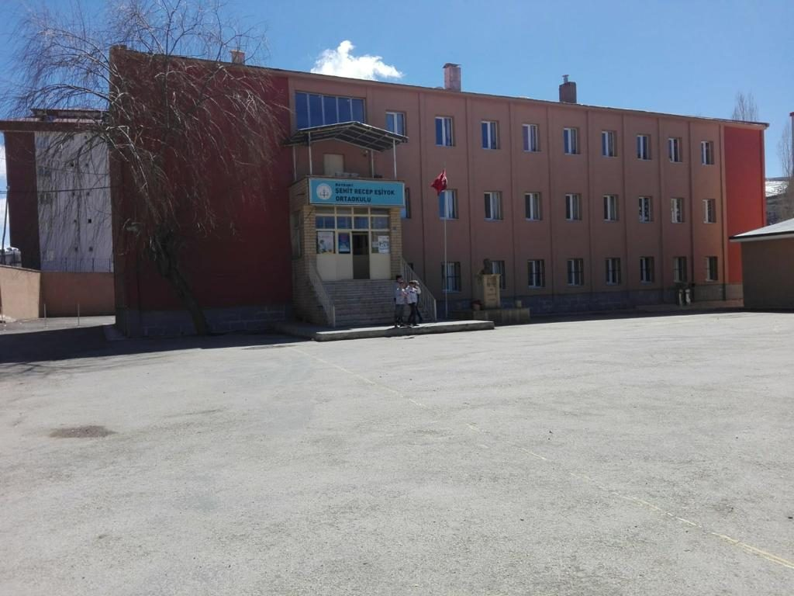
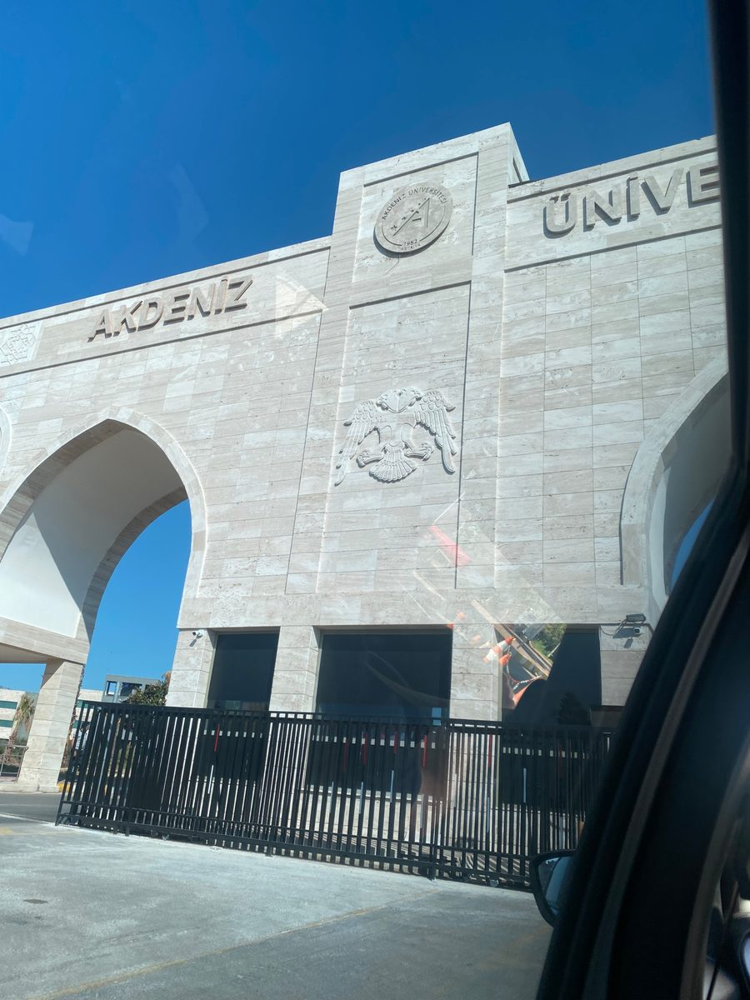

ŞevvalÇikot
Bilgisayar Programcılığı · Akdeniz Üniversitesi
Bu portre binlerce ışık parçacığından oluşuyor. İmleci üzerinde gezdir, boş bir yere tıkla, sonra aşağı kaydır: her bölümde parçacıklar yeni bir şekle dönüşecek.
hakkımda
Kısaca ben
Merhaba! Ben Şevval Çikot. 2025 yılından bu yana Akdeniz Üniversitesi'nde Bilgisayar Programcılığı okuyorum.
Liseyi Bayburt Rekabet Kurumu Kız Anadolu Lisesi'nde tamamladım. Teknolojiye olan merakım beni bu bölüme yönlendirdi; şu anda yapay zekâ üzerinde kendimi geliştiriyorum.
neler-yapıyorum
Uğraştığım alanlar
- 01
Grafik Tasarım
Adobe Photoshop ile görsel ve tasarım çalışmaları.
- 02
Web Tasarım
HTML ve CSS ile web sayfaları hazırlamayı öğreniyorum.
- 03
Programlama
C# ile programlamanın temellerini keşfediyorum.
- 04
Yazı Yazmak
Düşüncelerimi ve öğrendiklerimi yazıya dökmeyi seviyorum.
galeri
Galeriye git Okuduğum yerlerin fotoğrafları




blog
Tüm yazılar Blogdan son yazılar

Image Stack ile fotoğraftaki kalabalığı silmek
Kalabalık bir tramvay durağını, birkaç fotoğraf ve Photoshop'un Median yığın moduyla bomboş gösterdim.Yazıyı oku